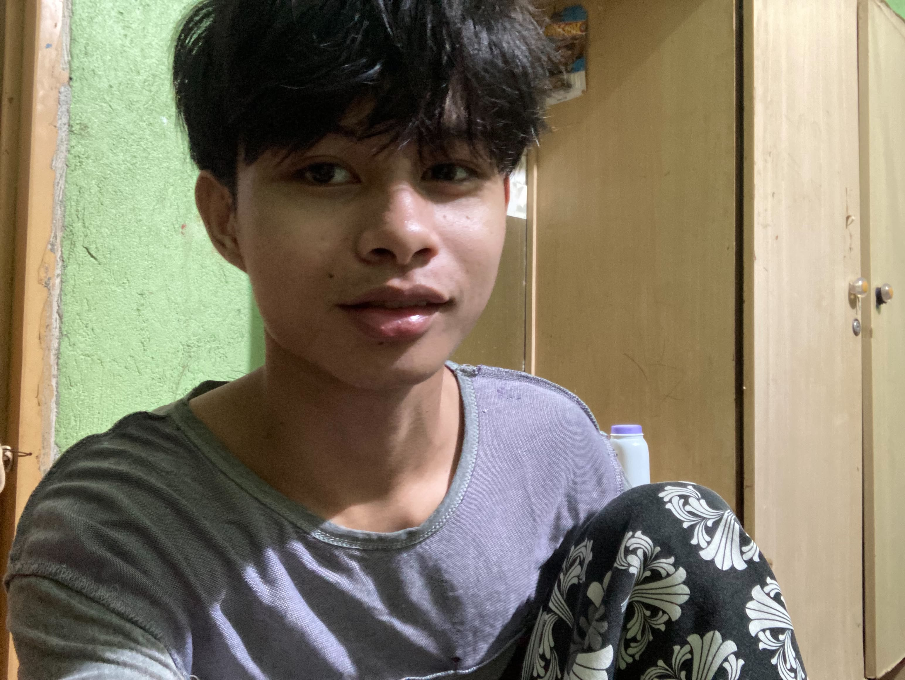
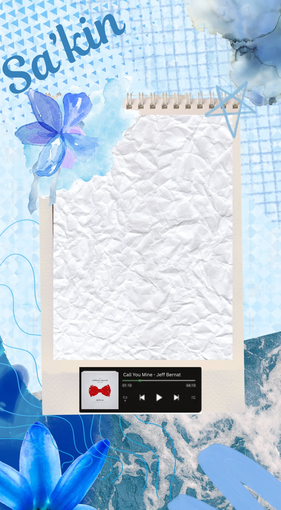

I wrote a letter for yah! Pero siyempre, patungkol muna sa'kin para fair 'di ba? Gusto la'ng kita bigyan ng thoughts na sa side ko lang ang may alam. Isa pa, ginawa ko itong website kasi unique and siguro it is one of the skill na mayroon akong mahirap makita sa iba. Though, perchance that for some people may not see this a lot. But still, I want to express my feelings in my own totality of will. So yeah, enjoy!

Hi Yana!,
Noon pa ma'y 'di ko rin talaga inaakalang mangyaring magiging close tayo, 'di ko inaasahang hindi la'ng pala grade ang mababago nang pagtu-turo ko sa inyo, bagkus ay may bago rin pala akong magiging kaibigan. Isa pa, hindi ko rin inaasahan na ia-add mo ako sa social media ko. lakas mo dre, nagawa mo'ng mag first-move sa akin. Ni-hindi ko pa rin talaga alam kung papaano mo ako na add o nahanap yung fb acc ko no'n. Dahil do'n, ikaw talaga pinaka-una ko naging friend na babae sa campus no'ng kasagsagan ng 1st or 2nd quarter natin as grade 11. Galing 'di bah???
Sa sumunod pa ay, naangasan talaga ako sa'yo noong ni-introduce mo sarili mo sa'kin. Pinaka-memorable para sa'kin yung picture mo na may hawak ka na ahas. It is actually one of the trait na nagustuhan ko sa'yo... iyong "Weird" traits mo. Not in a bad way pero it's something na one of a kind na siguro magpapaalala sa'kin everytime na makikita ko ulit. Marami pa na bagay ang nagustuhan ko sa'yo at siguro'y magiging research 'tong letter kaya't mas mabuti at gusto ko rin na sa personal na lamang sabihin.
Hanggang sa tumagal, sa 'di inaasahang pangyayari'y mangyaring sinabi mo sa akin nagugustuhan mo ako. No'ng panahon na iyon ay hindi ko rin alam dahil siguro hindi pa nags- sync in sa akin ang mga pangyayari. Hinayaan ko muna ang panahon ang mag pasiya, dahil hindi rin ako sigurado sa kung anong naiisip ko. Pero, kinalauna'y napagtanto rin na "oo nga, gusto ko rin siya". Para sa akin, gusto ko ilahad lahat nang may pag-bagal iyong tipong walang panahon o oras na humahabol sa pagsambit ng bagay-bagay.
Salamat dahil maraming bagay ang binago mo sa akin kahit na "crush" pa lamang kita. Pero, alam nating marami pang-oras para gawing seryoso ang lahat. Keep hustling muna tayo G sa schoolworks at acads para maangas. Pero, kidding aside. Let's keep enjoying our own life muna para sa kung sakaling dumating ang oras, marami tayong experience na maish=share sa isa't isa 'di ba? True to life friends to lover ang plot natin. Pero, 'di ko alam, malay mo sa una't sapul gusto mo na pala ako haha.
Dahil diyan, if-feature natin iyong kanta mo na introduce sa akin. Call You Mine by Jeff bernat I feel like nae-emphasize niya yung likeness natin sa simula't sapul. Namamangha pa nga tayo no'n nung unang pag-uusap natin na halos marami pala tayong pagkakatulad. We do like the same color, shade, scenery. And yeah, this song reminds us about blue... it reminds "us".
Dagdag pa, gusto ko rin sabihin na I actually really like the way na you like animals. Sa kahit anong nakikita mo, you have the urge to pet that animal no matter what kind. Isa iyon sa bagay na chine-cherish ko about sa'yo at palagi ko'ng maalala sa personality mo. It's actually great na nakilala kita Julianna, I feel like naco-comfort ako ng presence mo no matter what. Siguro nga dahil gusto kita, at hindi ko rin ipagkakaila. kaya't isa rin sa pinakahinihintay ko na dumating para sa atin ang panahon. The feeling is great, everythng is great, and so I wish that everything stayed consistent as we go Yana. And so "can I call my lover" - (Bernat, 2011). Lastly, ginawa ko palang website para maangas🔥🔥, sa akin mo la'ng danas 'to boi.